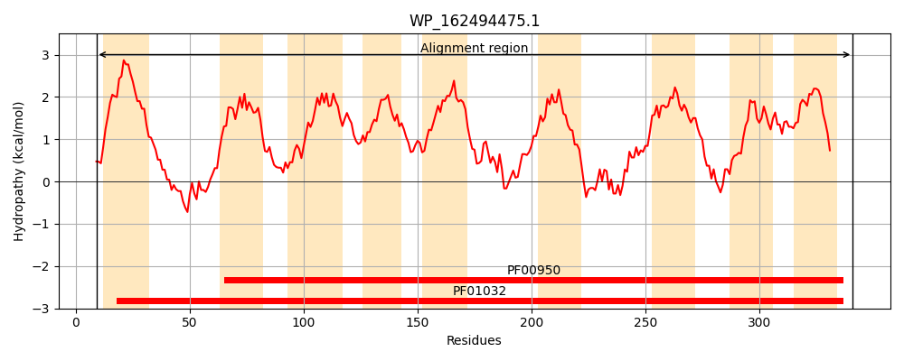
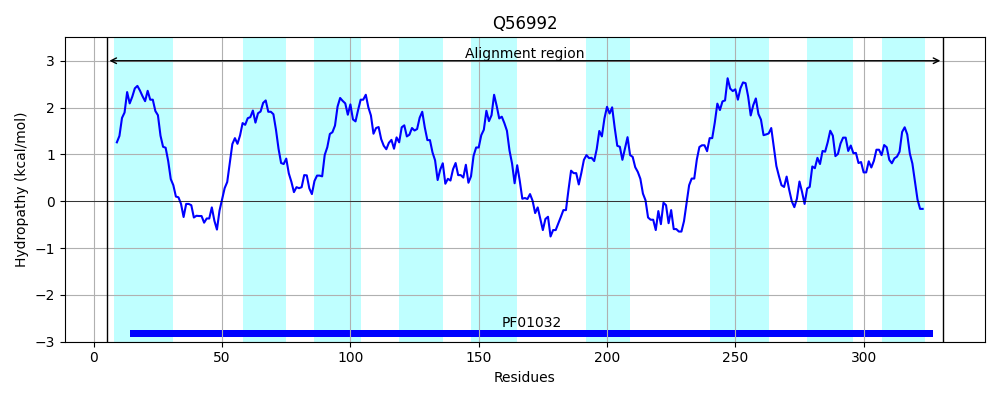
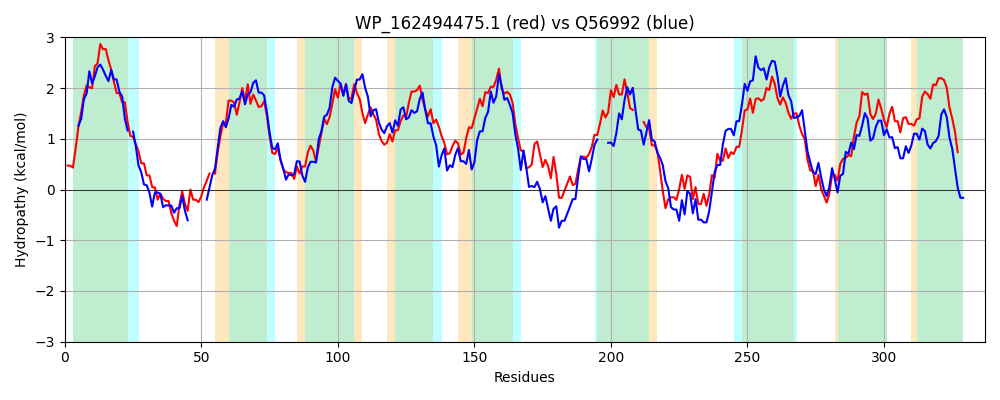

Hit Accession: Q56992
Hit TCID: 3.A.1.14.5
Hit Description: gnl|BL_ORD_ID|14155 gnl|TC-DB|Q56992|3.A.1.14.5 Hemin transport system permease protein hmuU - Yersinia pestis.
Mach Len: 337
e:0.000000
Query TMS Count : 9
Hit TMS Count: 9
TMS-Overlap Score: 7.050000
Predicted Substrates:CHEBI:5651;ferroheme b
BLAST Alignment:
Score: 546 , Bit scores: 214 bits, E-value: 1.7e-67, Alignment length: 337, Percentage identity: 40
Query: 9 VRRRLLLMLLLALLIVASLLLDFMLGPSGLPLQSLWQTLTDPASADPGTRAIVW-DIRLPYAVMAIIVGLALGLAGAEMQTILNNPLASPFTLGVSSAAAFGAALAIVLGIGLPGIPGQWFISANAFIFALLAALLLDGITRWTQVATSGVILFGIALVFTFNALVSMLQFIANEDTLQGLVFWTMGSIDRASWSKVAILLVALALVMP---LSLRSAWKLTALRLGEDRAISFGINVRRLRLTTLLRISILSALSVAFVGPIGFIGLVAPHIARMLFGEDHRFYLPASALIGALVLSLASIASKNLIPGAIIPVGIVTSLVGVPFFLSIILRHRGQ 341
V+ RL+L LL LL++ +L M G L ++LW T T+ A +W +IRLP ++A++VG AL ++G MQ + NPLA P LG+SS AA L IV+ LP + + AFI +L + ++ ++RW + ++L GIA+ A V +L +I+++ L+ W+MGS+ +A WS LLVA +L++P L L A +L L+LG++ A G+NVR+ +L LL +IL +VA G IGFIGLV PH+ RM G DHR+ LP +AL GA +L A ++ L+ A +PVG++TSL+G P+FL +ILR R Q
Sbjct: 5 VQPRLMLGFLLILLVILALGSANM-GALSLSFRTLWNTSTNDAMWH------IWLNIRLPRVLLAVVVGCALAVSGTIMQGLFRNPLADPGLLGISSGAALCVGLIIVMPFSLPPLLALYSHMVGAFIGSLAISTIIFTLSRWGHGNLARLLLAGIAINALCGAAVGVLTYISDDQQLRQFSLWSMGSLGQAQWST---LLVASSLILPTCILGLLQARQLNLLQLGDEEAHYLGVNVRQAKLRLLLLSAILIGAAVAVSGVIGFIGLVVPHLIRMRIGADHRWLLPGAALGGACLLLTADTLARTLVAPAEMPVGLLTSLLGGPYFLWLILRQREQ 331 | Protein Hydropathy Plots: |
|---|
|  |  |
Pairwise Alignment-Hydropathy Plot:
|
|---|
|  |